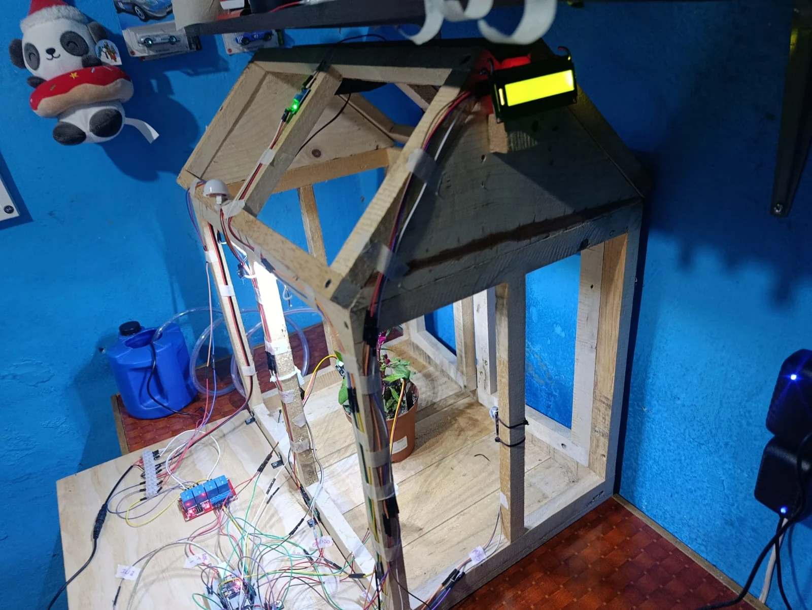

El alcance final
La versión final del invernadero utiliza el ESP32 como unidad central para relacionar las lecturas de los sensores con el control del riego, la ventilación y la iluminación. La pantalla LCD permite consultar información localmente y el enlace Bluetooth agrega la comunicación con el teléfono.
El sistema cuenta con modo automático y modo manual. Ambas formas de operación permiten presentar el proyecto desde dos perspectivas: la respuesta del programa a las variables medidas y la intervención directa del usuario.
Modo automático
En este modo, el programa utiliza las lecturas de los sensores para tomar decisiones sobre los actuadores. La humedad del suelo se relaciona con el riego; la temperatura, con la ventilación; y la iluminación del entorno, con las luces LED.
El propósito del modo automático es reunir la medición y la actuación en un mismo proceso. El ESP32 recibe la información y ejecuta las condiciones definidas en el programa para cada función.
Modo manual
El modo manual permite al usuario intervenir sobre la bomba, el ventilador y las luces. Esta forma de operación facilita las demostraciones y la comprobación individual de las salidas.
La diferencia principal está en el origen de la decisión: en automático depende de la lógica asociada a las lecturas; en manual corresponde a la instrucción del usuario. Los dos modos pertenecen al alcance final del proyecto.
Comunicación Bluetooth
Bluetooth permite la comunicación entre el teléfono y el ESP32. En el proyecto se utiliza para consultar información del invernadero y enviar instrucciones de control, de manera que el usuario puede interactuar con el sistema desde el teléfono.
En la presentación, esta función complementa la visualización local de la pantalla LCD y el modo manual. El esquema que acompaña esta entrada explica esa relación entre teléfono, controlador y actuadores.

| Función | Alcance final |
|---|---|
| Monitoreo | Lectura de variables del ambiente, el suelo y la iluminación. |
| Actuación | Control del riego, el ventilador y las luces LED. |
| Modo automático | Acciones determinadas por las condiciones del programa. |
| Modo manual | Intervención directa del usuario sobre los actuadores. |
| Bluetooth | Comunicación con el teléfono para información y control. |
| LCD | Visualización local de información del sistema. |
El prototipo en imágenes
Las fotografías muestran el montaje del proyecto: la estructura de madera, la maceta, la iluminación LED y la distribución de los sensores y del circuito de control. El depósito y la manguera forman parte del sistema de riego.

Video de demostración
Los dos pendientes
Al finalizar el proyecto quedan únicamente dos elementos pendientes del alcance previsto:
- Puertas automáticas: completar el mecanismo de apertura y cierre.
- Sensor de flujo: incorporar la medición del paso de agua.
Estos elementos se mantienen separados de las funciones presentes en la versión final. El modo manual y Bluetooth ya forman parte de ese resultado.
Conclusiones
El invernadero permitió aplicar la lectura de sensores, la programación de un controlador y la operación de actuadores a un problema concreto. El trabajo por etapas ayudó a comprender cada parte antes de reunir el sistema.
La combinación de control automático, modo manual y Bluetooth amplía las posibilidades de operación y demostración del prototipo. El proyecto muestra cómo la Electrónica Digital puede utilizarse para observar un entorno y responder mediante acciones físicas.
La bitácora conserva la evolución de las cuatro fases y cierra con el alcance final: riego, ventilación, iluminación, visualización, control manual y comunicación Bluetooth; las puertas y el sensor de flujo quedan como las dos tareas pendientes.